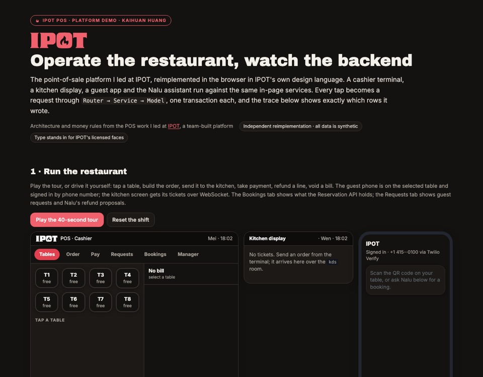

Nº02 · Router → Service → ModelRestaurant backend · 2026餐厅 POS 后端 · 2026
POS Platform
Run a shift and watch every tap become one transaction. Refunds wait for a manager.跑一班营业，看每次点击变成一笔事务；退款要经理批准。

29 tests · atomic settle
01Problem问题
Settling a bill used to take four separate API calls. If the process died between them, a table could be marked paid with no payment row, or paid twice on retry.结账原本要四次独立 API 调用；进程在中间崩溃，就可能出现“已付款却没有付款记录”，或者重试时重复收款。
02Flow流程
- Tap点击
- Router路由
- Service服务
- One transaction单一事务
- Rows written · traced写入行 · 可追踪
03What I built我做了什么
POST /orders/{id}/settledoes payment, tip, close and table release in one transaction. A side-by-side lets you kill the process at any step and compare.POST /orders/{id}/settle在一个事务里完成付款、小费、结单和清台；可以在任意一步“杀掉进程”对比新旧做法。- Menu prices are snapshotted at sale time, so a price change never rewrites an open bill. Voids are logged; refunds over the limit wait for a manager.售出时快照菜品价格，改价不会改写未结账单；作废留痕；超额退款等经理批准。
- Nalu sits at the edge: bookings go to the Reservation API with an
Idempotency-Key; a retry replays, a different payload gets 409.Nalu 在边缘：预订带Idempotency-Key发往 Reservation API；重试会重放结果，不同请求体返回 409。
04Measured测量结果
12 / 0
refused requests in “Try to break it” / rows they write“试着弄坏它”中被拒绝的请求 / 写入行数
src · ledger-demo/README.md
05Limits, stated plainly局限，直说
- Uses IPOT's design tokens and wordmark; licensed typefaces are replaced with Google Fonts.使用 IPOT 的设计令牌与字标；授权字体以 Google Fonts 替代。
- Services run in the page, not against a real database; the transaction boundaries mirror the production design.服务在页面内运行而非真实数据库；事务边界与生产设计一致。